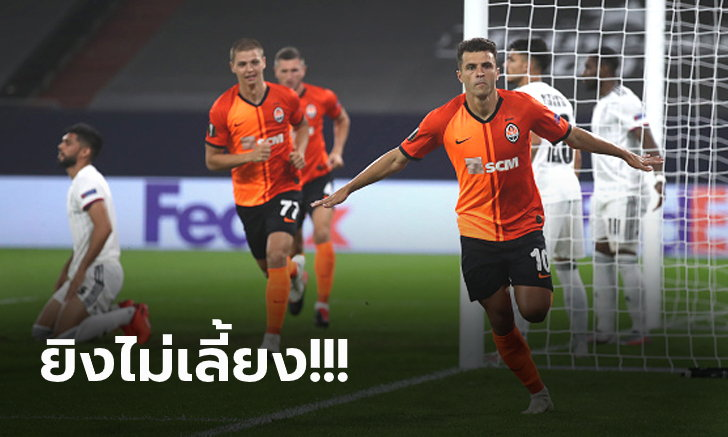
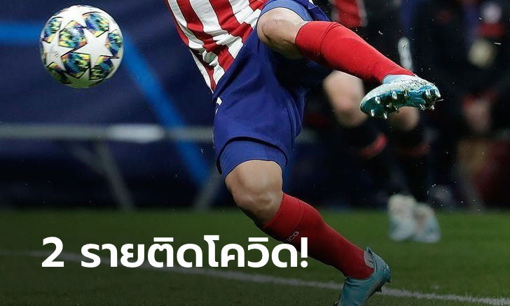
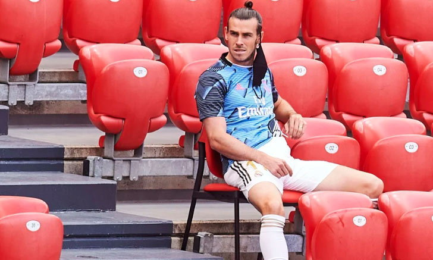

ทีมนี้เหมาะสุด! "คุโบะ" แจงเหตุผลเลือกซบเรือดำน้ำสีเหลือง
ทาเคฟุสะ คุโบะ ปีกดาวรุ่งของ "ราชันชุดขาว" เรอัล มาดริด เผยเหตุที่ตัดสินใจเลือกซบ "เรือดำน้ำสีเหลือง" บียาร์เรอัล เพราะเป็นตัวเลือกที่ดีที่สุด แม้มีจากหลายทีมสนใจก็ตาม หลังย้ายไปค้าแข้งด้วยสัญญายืมตัว 1 ฤดูกาล
"ผมเลือกบียาร์เรอัลเพราะมันเป็นตัวเลือกที่ดีที่สุด นั่นคือสิ่งที่ครอบครัวของผมและตัวแทนคิด ดังนั้น ตอนนี้ผมต้องพิสูจน์ตัวเองให้ได้"
"ใช่ มีข้อเสนอทีมอื่นๆเข้ามา แต่นี่เป็นสิ่งที่ดีที่สุด นั่นคือเหตุผลที่ผมมาที่นี่ ผมมุ่งมั่นกับบียาร์เรอัลเท่านั้น ผมไม่ได้คิดถึงเรื่องอื่นๆ"
"ผมพร้อมทุ่มเทให้บียาร์เรอัลเต็มร้อยแน่นอน เหมือนที่เคยทำที่ เรอัล มายอร์กา เมื่อปีที่แล้ว" ดาวโรจน์ทีมชาติญี่ปุ่นวัย 19 ปี กล่าว
รัวยิงไม่ซ้ำหน้า! ชัคตาร์ โดเนตส์ค ไล่ถล่ม บาเซิ่ล 4-1 ลิ่วชนงูใหญ่
การแข่งขัน ฟุตบอล ยูโรปา ลีก รอบ 8 ทีมสุดท้าย คู่ระหว่าง ชัคตาร์ โดเนตส์ค พบกับ บาเซิ่ล ที่สนาม เฟลตินส์ อารีน่า, ประเทศเยอรมัน เมื่อคืนวันอังคารที่ 11 สิงหาคม ที่ผ่านมา
เปิดเกมมาได้เพียงแค่ 2 นาที ชัคตาร์ โดเนตส์ค ได้ประตูออกนำ 1-0 อย่างรวดเร็ว หลังได้ลูกเตะมุมฝั่งขวา มาร์ลอส เปิดโค้งไปหน้าประตูให้ จูเนียร์ โมราอิส โขกกดลงพื้นตุงตาข่าย
นาทีที่ 13 บาเซิ่ล เกือบได้ประตูตีเสมอ อาฟิมิโก้ ปูลูลู โชว์สกิลเหนือชั้นลากหลบแนวรับ 3 คน ก่อนยิงด้วยซ้ายหลุดเสาไกลออกไปชนิดได้ลุ้น
นาทีที่ 21 ชัคตาร์ โดเนตส์ค หนีห่างเป็น 2-0 มาร์ลอส ได้บอลก่อนจ่ายให้ ไทซอน วิ่งเติมเข้าไปซัดแฉลบ ฟาเบียน ฟราย เปลี่ยนทางเข้าประตูไป
นาทีที่ 40 ทีมจากยูเครน เกือบได้เพิ่ม มาร์กอส อันโตนิโอ สับไกหน้าเขตโทษด้วยขวาบอลพุ่งผ่านมือ ยอร์เย่ นิโคลิช ไปแล้วแต่ชนคานเต็มๆ หมดครึ่งแรก ชัคตาร์ โดเนตส์ค นำ 2-0
กลับมาเล่นต่อครึ่งหลัง นาทีที่ 75 ชัคตาร์ โดเนตส์ค หนีเป็น 3-0 จากจังหวะที่ ไทซอน ลากเข้าเขตโทษก่อนโดนชนล้ม ผู้ตัดสินชี้เป็นจุดโทษและเป็น อลัน สังหารเข้าไปไม่พลาด
นาทีที่ 88 ชัคตาร์ โดเนตส์ค สวนกลับเร็ว เตเต้ พาบอลจากครึ่งสนามก่อนเปิดออกขวาให้ โดโด้ วิ่งเข้ากดด้วยขวาเสียบเสาเด็ดขาด ชัคตาร์ โดเนตส์ค หนีเป็น 4-0
ช่วงทดเจ็บ บาเซิ่ล มาได้ประตูตีไข่แตกไล่มาเป็น 1-4 เมื่อ ซามูเอเล่ คัมโป ลากบอลเข้าเขตโทษก่อนเปิดให้ ริคกี้ ฟาน โวล์ฟสวิงเคล ซัดจ่อๆ ไม่เหลือ
จบเกม ชัคตาร์ โดเนตส์ค รัวถล่ม บาเซิ่ล 4-1 เดินหน้าผ่านเข้าสู่รอบรองชนะเลิศไปพบกับ "งูใหญ่" อินเตอร์ มิลาน ในวันจันทร์ที่ 17 สิงหาคม นี้
รายชื่อผู้เล่นของทั้งสองทีม
ชัคตาร์ โดเนตส์ค (4-2-3-1) :อันเดร เพียตอฟ - โดโด้, เซอร์เก คริฟต์ซอฟ, วาเลรี่ บอนดาร์, มิโกล่า มัตวิเยนโก้ - มาร์กอส อันโตนิโอ, ทารัส สเตปาเนนโก้ - มาร์ลอส, อลัน พาทริค, ไทซอน- จูเนียร์ โมราอิ
บาเซิ่ล (4-2-3-1) : ยอร์เย่ นิโคลิช - ซิลวาน วิดเมอร์, ยาสเปอร์ ฟาน เดอร์ แวร์ฟ, โอมาร์ อัลเดเรเต้, ราอูล เปเตร็ตต้า - เทาลันต์ ชาคา, ซามูเอเล่ คัมโป, ฟาเบียน ฟราย - วาเลนติน ชต็อคเกอร์, อาฟิมิโก้ ปูลูลู - อาร์ตูร์ คาบรัล
ผู้ตัดสิน : : ไมเคิล โอลิเวอร์ (อังกฤษ)
งานงอก! "ตราหมี" ยันตรวจเจอโควิด 2 รายก่อนปะทะ ไลป์ซิก ศึกยูฟ่า แชมเปี้ยนส์ ลีก
แอตเลติโก มาดริด แจ้งข่าวมีสมาชิกในทีม 2 รายติดเชื้อไวรัสโควิด-19 ก่อนหน้าเกมยูฟ่า แชมเปี้ยนส์ ลีก รอบก่อนรองชนะเลิศกับ แอร์เบ ไลป์ซิก ในวันพฤหัสบดีนี้
“ตราหมี” ของกุนซือ ดีเอโก้ ซิเมโอเน่ กำลังเตรียมความพร้อมก่อนลงเล่นในศึกยูฟ่า แชมเปี้ยนส์ ลีก รอบก่อนรองชนะเลิศพบ แอร์เบ ไลป์ซิก ในวันพฤหัสบดีที่ 13 สิงหาคมนี้
อย่างไรก็ตาม พวกเขาเจอข่าวไม่สู้ดีเมื่อมีผู้เล่นในทีม 2 รายที่ไม่ได้เปิดเผยรายชื่อ ติดเชื้อโควิด-19 หลังเข้ารับการตรวจตามมาตรการของสหพันธ์ฟุตบอลยุโรป หรือ ยูฟ่า
ด้วยเหตุนี้ทำให้ 2 คนดังกล่าวต้องกักตัวอยู่บ้านเพื่อรักษาอาการทันที และจะมีการตรวจสมาชิกคนอื่นที่เหลือในทีมอีกรอบ เช่นเดียวกับคนที่มีประวัติใกล้ชิดกับ 2 คนที่ติดเชื้อ
"กาเซมิโร" ย้ำ "เบล" คือผู้เล่นสำคัญของ มาดริด
กาเซมิโร มิดฟิลด์ขั้นเทพจาก เรอัล มาดริด ยืนยันว่าไม่อยากให้ แกเร็ธ เบล ย้ายออกจากถิ่น เบอร์นาบิว ตามข่าวลือ เพราะนี่คือ 1 ใน 3 นักฟุตบอลที่เก่งสุดของโลก ณ ปัจจุบัน
"แกเร็ธ เบล รู้ดีว่าตอนนี้ไม่ใช่ช่วงเวลาที่ดีสุดสำหรับเขาในฐานะนักฟุตบอลอาชีพ แต่ถึงกระนั้นก็ยังสนับสนุนโค้ชและเพื่อนร่วมทีมคนอื่น ๆ ด้วยความจริงใจตลอดเวลา" กาเซมิโร กล่าวกับ Esporte Interativo
"ทุกอย่างที่ เบล ทำในทุก ๆ วันแสดงให้เห็นว่าเขาคือคนสำคัญของ เรอัล มาดริด อย่างแท้จริง และเมื่อไหร่ก็ตามที่ได้รับโอกาสลงสนาม ก็พร้อมสร้างความมหัศจรรย์ให้เกิดขึ้นได้ทุกเมื่อแบบเปิดสวิตซ์เลยทีเดียว โดยเฉพาะเวลาลงเล่นเกมใหญ่ ๆ"
"ผมกับเพื่อน ๆ พูดกันแบบไม่เคยปิดบังว่าถึงแม้ เบล จะตกอยู่ในสถานการณ์ที่ค่อนข้างยากลำบาก แต่ก็ยังเป็น 1 ใน 3 นักฟุตบอลที่เก่งสุดของโลกเหมือนเดิม พวกเรารักเขามากและพร้อมช่วยเหลือทุกเรื่องหากเขาต้องการ"